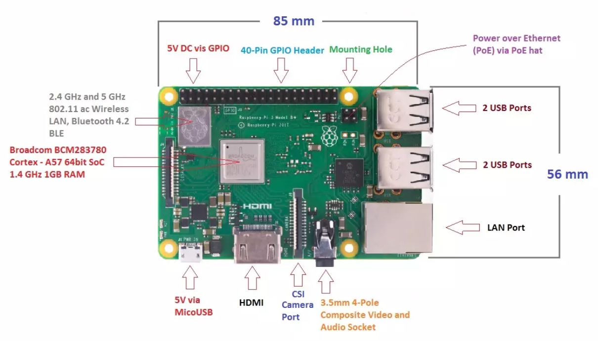
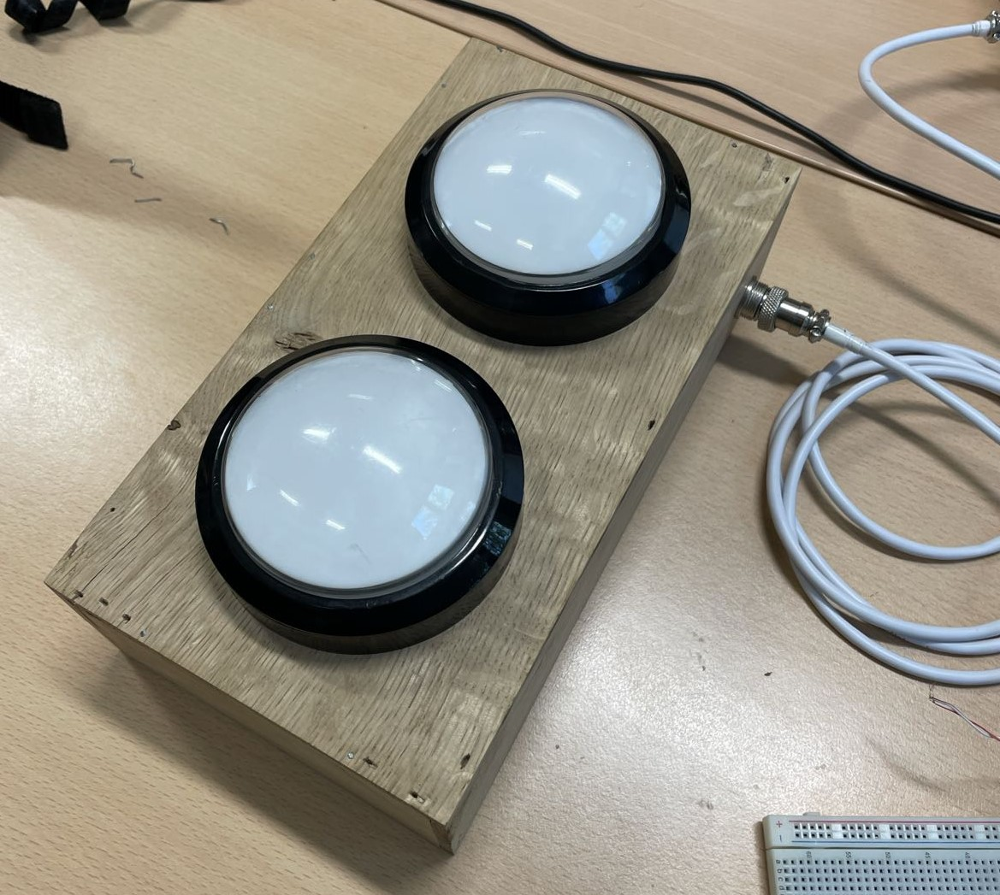
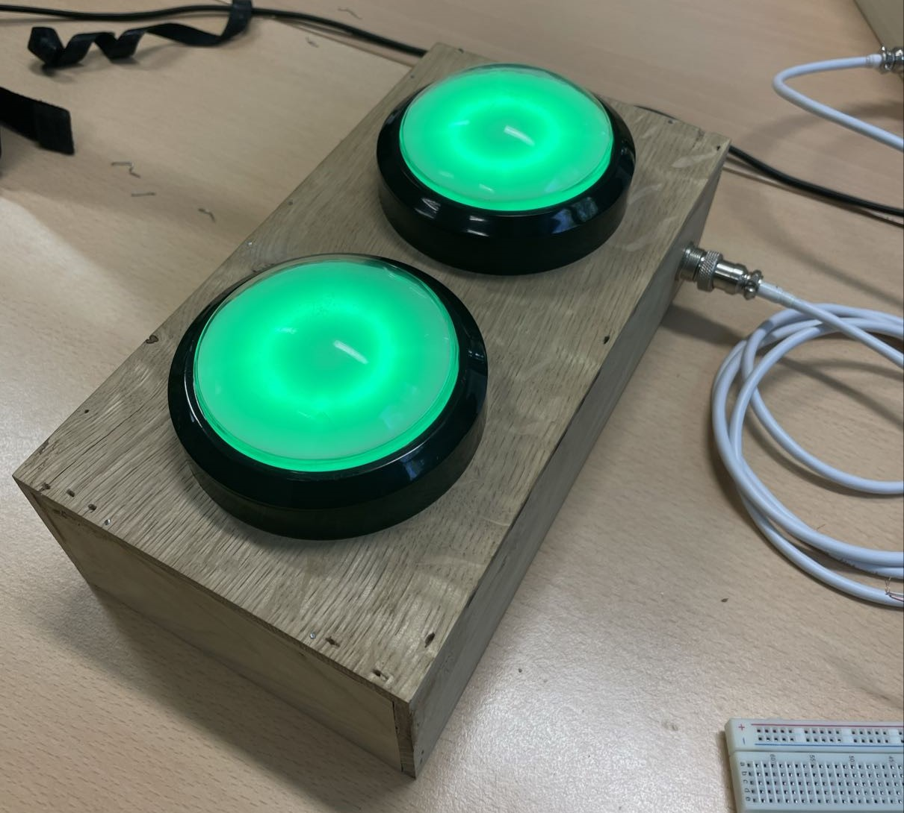
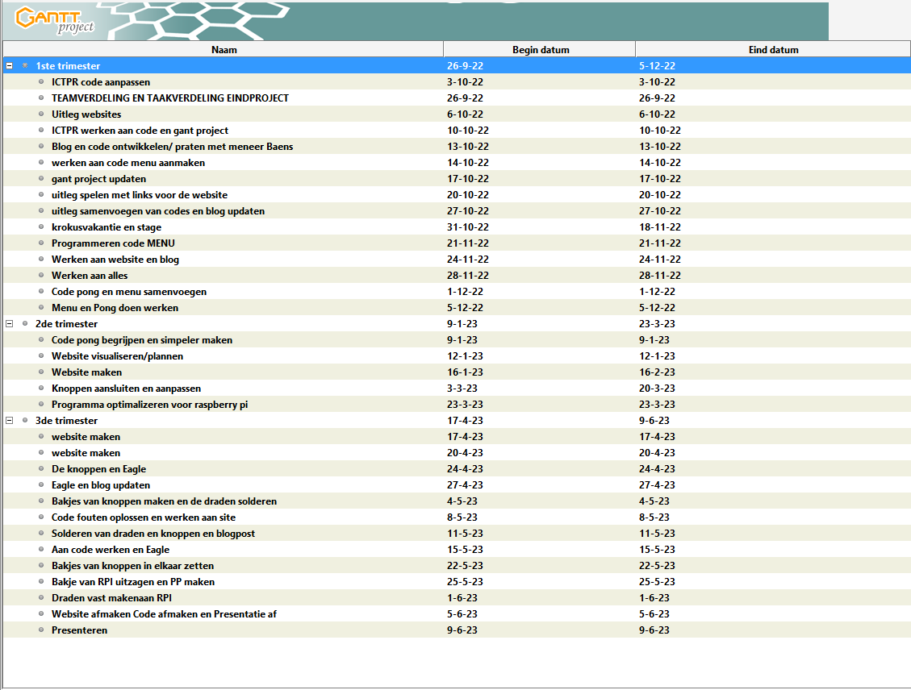

De code
Raspberry PI 3 B+
De Raspberry Pi 3 B+ is een super minicomputer. De minicomputer is ongeveer zo groot als een creditcard. Alles kan met de Raspberry Pi. Van je eigen programma’s maken tot video’s afspelen en van presentaties maken tot games spelen. Deze gebruiken we voor ons project.
Knoppen
 Hierboven ziet u de knoppen die wij gebruiken voor het omhoog en omlaag gaan van de paddles in het spel. De knoppen zijn aangesloten m.b.v een pull up weerstand zodat deze naar de GND en naar een Digitale ingang moet gaan. De spi ingang is een synchrone seriële datalink tussen ten minste twee mediums. Er is in eerste instantie sprake van één master en één slave. In de knoppen zit een ws2812 led ring van 16 ledjes die op de spi pin zit. Deze zit op GPIO pin 10. Deze worden aangestuurd door de neopixel module.
Connectoren

Hierboven ziet u een 8-pins DIN-connector die we gebruiken om de kabel van de knoppen naar de raspberry pi te brengen. De connector is een ronde connector met acht pinnen die elektrische verbindingen mogelijk maakt tussen verschillende apparaten, meestal gebruikt in audiotoepassingen. Elke pin heeft een specifieke functie en maakt verbinding met een bijpassende pin in een andere connector om elektrische signalen over te brengen.
Python

Python is een veelzijdige programmeertaal die bekend staat om zijn eenvoudige en leesbare syntaxis. Het heeft een grote standaardbibliotheek en wordt veel gebruikt voor webontwikkeling, gegevensanalyse, AI en machine learning. Wij gebruiken python voor het ontwerpen van onze pong code. Dit doen we met de module pygame die het voor ons makkelijker maakt om een spel te maken.
GanttProject
GanttProject is projectmanagementsoftware voor het plannen, organiseren en beheren van projecten. Het biedt een visuele weergave van taken, tijdlijnen en resources, en genereert Gantt-diagrammen. Wij hebben dit gebruikt voor het plannen van ons project om te zien wat wij wanneer hebben gedaan. Hierboven kunt u dit zien.
Eagle
Eagle is software voor het ontwerpen van printplaten (PCB's). Het heeft een gebruiksvriendelijke interface en krachtige tools om circuits te tekenen, componenten te plaatsen, sporen te routeren en het ontwerp te verifiëren. Hierboven ziet u onze eagle tekening.